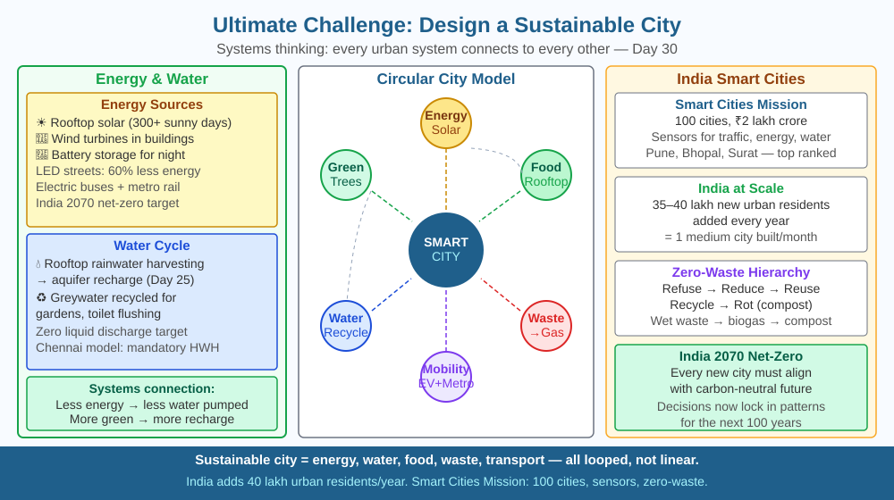

By the end of this lesson, you should be able to explain what makes a city sustainable, apply systems thinking to identify how urban systems connect, and design solutions for at least three interconnected urban challenges.
Mumbai has 21 million people. Every day it needs: 3,800 megalitres of water, electricity for 3.4 million households, food for millions of families, transport for 7.5 million commuters, and it generates 11,000 tonnes of solid waste. Nearly all of this arrives from somewhere else, is used once, and becomes pollution or waste. What would a city look like that meets all these needs while using only what it can regenerate?
Systems thinking: A sustainable city is not a collection of isolated solutions. Every system connects to others. Fixing one without considering connections can make others worse.
Energy: - Solar panels on every rooftop (India gets 300+ sunny days/year in most regions) - Wind turbines integrated into buildings - The 2070 net-zero target requires electrifying all transport and industry
Water: - Rainwater harvesting captures monsoon rain in tanks, injecting surplus into aquifers (connects to Day 25's infiltration lesson) - Greywater recycling (from sinks and showers) reused for gardens and flushing - Every 1 % increase in water recycling reduces river extraction significantly
Waste: - Zero-waste hierarchy: Refuse → Reduce → Reuse → Recycle → Rot (compost) - Wet waste → biogas (cooks food) + compost (grows food) - Dry waste → material recycling - India's Swachh Bharat Mission diverted millions of tonnes from landfills
Food: - Urban farms, rooftop gardens, and hydroponic vertical farms reduce transport distance - Local food = less refrigeration, less packaging, less fossil fuel for trucks - Insects and algae provide high-protein food with minimal land use
Transport: - Electric buses and metro reduce air pollution (connects to combustion, Day 17) - Cycling infrastructure reduces heart disease and obesity (co-benefit) - Mixed-use zoning (homes, work, shops in same area) reduces commute distances
Green spaces: - Trees cool cities by 2–8°C (urban heat island effect) - Parks absorb rainwater (connects to Day 25) - Biodiversity corridors (connects to Day 22)
Key India example — Masdar-inspired concepts and smart cities: India's Smart Cities Mission (100 cities) incorporates data sensors for traffic, energy, and water, LED street lighting, and integrated command centres. Pune, Bhopal, and Surat rank among top implementations.
Think of a sustainable city as a living organism rather than a machine. In a machine, parts can be replaced one at a time without affecting others. In an organism, every system talks to every other system — change one, you change all.
Consider Mumbai's water system. If you increase rainfall harvesting, you recharge aquifers (water system). Healthier aquifers mean less groundwater pumping, which means less energy used (energy system). Less pumping energy lowers electricity bills, freeing money for urban forests (green space system). More urban forests cool the city by 3–5°C (climate system). A cooler city reduces air conditioning demand, again cutting energy use.
This is a feedback loop — one change amplifies through the system and returns to benefit the original system. Sustainable city design is about engineering these positive feedback loops:
The trap to avoid: optimising one system in isolation. Wide roads speed up cars but fragment the city for pedestrians. A landfill solves immediate waste but poisons groundwater for decades. Every urban decision is a systems decision.
The included SVG shows a bird's-eye view of a circular city divided into six sectors, each coloured differently: solar energy (yellow rooftop panels and a wind turbine), water (blue rainwater tanks and underground aquifer arrows), food (green rooftop farms and a vertical farm tower), waste (brown biogas plant with arrows feeding back to cooking gas and compost), transport (red metro line, cycle paths, and a car-free zone), and green space (dark green park and biodiversity corridor). Curved arrows interconnect each sector: biogas connects waste to food, compost connects waste to food and water, cooling arrows connect green space to energy, and aquifer recharge connects water to food. A central data hub is labelled "Smart City Command Centre" with thin data lines radiating to all sectors. A population label reads "100,000 residents, 80 % self-sufficient."

India adds 35–40 lakh urban residents every year — building one medium city every month. The decisions made now about how these cities are designed will lock in energy, water, and transport patterns for 100 years. Cities like Lavasa (Maharashtra), GIFT City (Gujarat), and Amaravati (Andhra Pradesh) have been designed from scratch with sustainability principles. India's National Action Plan on Climate Change (NAPCC) includes specific missions for solar, water, and sustainable habitats. The 2070 net-zero commitment means every city built today must be compatible with a carbon-neutral future.
Sustainable city design challenge: Take an A3 sheet of paper. Draw a city of 100,000 people. Mark: where food comes from, where water comes from, where energy comes from, what happens to waste. Now redesign it to be 80 % self-sufficient: add solar panels, rooftop farms, rainwater collection, biogas plants, and bicycle lanes. Identify three tradeoffs: what do you give up? What does each system affect when you change it? Present your city to a classmate and challenge them to find flaws.
The circular economy replaces the linear "take-make-dispose" model with loops: materials cycle back into use at the highest possible value. A circular city recovers phosphorus from sewage (it is a non-renewable mineral essential for farming), extracts methane from landfill gas, turns construction waste into new building materials, and designs products to be disassembled and reused rather than discarded. The Netherlands has a national circular economy strategy targeting 50 % reduction in use of new raw materials by 2030. India's draft EPR (Extended Producer Responsibility) rules require companies to take back their packaging and electronics — the first step toward circular economy regulation. Could you identify three items in your home that could be made part of a circular system?
Predict: A new city of 500,000 people is planned in Rajasthan — a region with very high solar radiation but acute water scarcity and no perennial rivers. Using systems thinking, describe how the city could use solar energy to solve its water problem, and identify one system where solving water would create a secondary benefit for food. Then identify one potential negative consequence of the solution you proposed.
What is the central goal when designing a sustainable city?
Correct answer: A
Why is a systems-thinking approach more useful than solving one problem at a time?
Correct answer: A
If a sustainable city removed all cars and relied only on cycling and walking, what would you predict?
Correct answer: A
Surat, Gujarat, has been ranked among India's top smart cities. It receives monsoon rainfall of approximately 1,200 mm/year and has a population of 7.5 million.
(a) Calculate the total volume of rainwater that falls on 50 km² of Surat's urban area in one monsoon season (rainfall = 1,200 mm = 1.2 m). Express your answer in cubic metres and litres. (b) If 20 % of this rainwater can be captured through rooftop harvesting and stored in neighbourhood tanks, calculate the volume captured and express it as the equivalent number of days of water supply, given that the city uses 200 litres per person per day. (c) Surat generates 1,800 tonnes of wet waste per day. Biogas yield from wet organic waste is approximately 0.4 m³ of methane per kg. If 60 % of wet waste is converted, calculate daily methane production in m³ and estimate how many households (each using 2 m³/day for cooking) this could supply. (d) Identify one way the biogas system would directly reduce Surat's water treatment costs, using your understanding of waste and water system connections.
Singapore — a city-state of 5.9 million people with no rivers and almost no agricultural land — produces 40 % of its own water by recycling treated sewage into drinking water. The treated water, called NEWater, is so clean it exceeds WHO drinking standards. Singapore pipes it into reservoirs where it mixes with rainwater and conventional treated water — and no resident can tell the difference. This works because membranes can filter out viruses, bacteria, and dissolved chemicals at the molecular scale. India's JALDOOT project and several Chennai plants are moving toward similar indirect potable reuse — turning treated wastewater into drinking water in a country where freshwater scarcity threatens 600 million people by 2030.
A sustainable city is not a collection of green gadgets — it is a living system where energy, water, food, waste, and transport feed back into each other, and the art of sustainable design is engineering those feedback loops so that solving one problem simultaneously improves all the others.